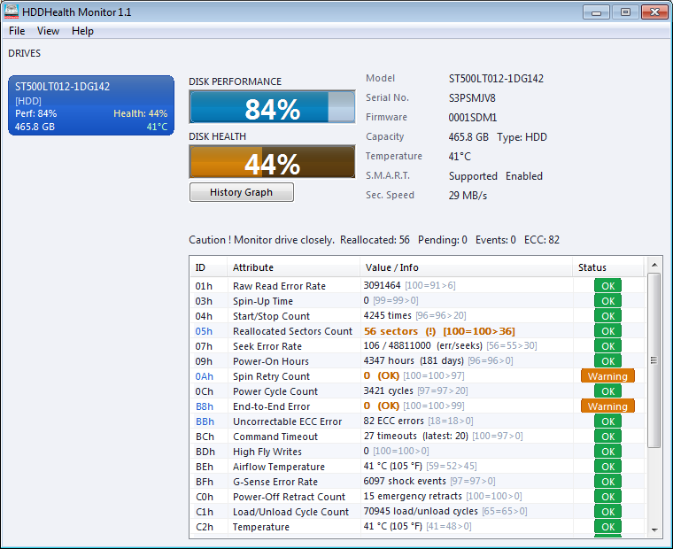
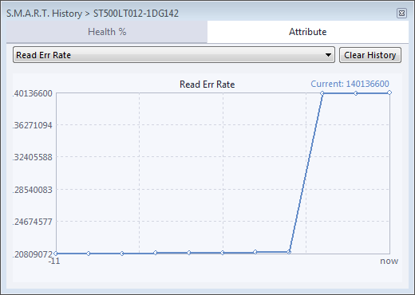
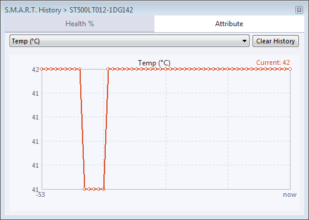

Health Percentage
Instant per-drive health score calculated from S.M.A.R.T. attribute thresholds. Green, yellow, and red status indicators make it easy to spot problems at a glance.
HDDHealth Monitor reads raw S.M.A.R.T. data directly from your physical drives and presents health, temperature, and performance metrics.
Everything you need to keep an eye on your storage devices.
Instant per-drive health score calculated from S.M.A.R.T. attribute thresholds. Green, yellow, and red status indicators make it easy to spot problems at a glance.
Real-time temperature readings for every drive. Configurable alert thresholds warn you before overheating causes permanent damage to your storage.
Complete attribute table showing ID, current value, worst value, raw data, and status for every S.M.A.R.T. attribute. Know exactly what's happening inside your drives.
Track health percentage and individual attribute values over time with built-in history graphs. Data is persisted between sessions so you can spot long-term trends.
System tray alerts for temperature, health, and predicted failure events. Multi-drive tray icons let you monitor all drives without keeping the window open.
One-click PNG screenshot capture of the current drive data. Perfect for sharing diagnostic information in forums, bug reports, or support requests.
Automatically detects USB drives when they're connected. Supports JMicron, ASMedia, Realtek, Cypress, Sunplus, Prolific, and other common USB bridge chips.
Read/write speed benchmarks and NVMe endurance statistics including total bytes written, power-on hours, unsafe shutdowns, and media error counts.
One tool for every drive type in your system. HDDHealth Monitor talks directly to the hardware.
Traditional mechanical hard drives connected via SATA or legacy PATA interfaces. Uses IOCTL_ATA_PASS_THROUGH_DIRECT for reliable low-level data access.
Modern NVMe drives via the Microsoft native NVMe driver. Reads Health Info Log (0x02) with full endurance statistics, thermal management data, and 8 temperature sensors.
External drives connected via USB using SAT (SCSI-ATA Translation). Automatically identifies bridge chips from JMicron, ASMedia, Realtek, Cypress, VLI, FMA, and more.
Solid-state drives with S.M.A.R.T. life indicators including SSD life left percentage, total NAND writes, average and max erase counts, and wear leveling statistics.
Automatic vendor detection for accurate attribute interpretation and health assessment.
All the critical information at a glance. No clutter, no confusion.



HDDHealth Monitor goes straight to the hardware, bypassing abstraction layers for accurate data.
Uses Windows DeviceIoControl API to send ATA/NVMe/SCSI commands directly to physical drives. No WMI overhead, no middleware, no delays. Data is read fresh on every refresh cycle.
Each drive is probed through multiple access paths (ATA Pass-Through, SAT12/SAT16, Storage Query, NVMe Protocol) to ensure compatibility across different controller and bridge chip combinations.
Health percentage is computed by comparing each S.M.A.R.T. attribute's current value against its threshold, with special handling for SSD life indicators, NVMe percentage used, and critical warning flags.
Built with the Win32 API and GDI+ for maximum performance and minimal footprint. The entire application compiles to a single standalone .exe with no external runtime dependencies.
HDDHealth Monitor is written in C++ and builds with MinGW-w64 or TDM-GCC.
git clone https://github.com/hddmonitor/HDD-Health-Monitor.git
cd HDD-Health-Monitor
makeThe output binary will be placed at bin/HDDHealth.exe — a single, standalone executable with no external dependencies.
This project is released under the MIT License. You are free to use, copy, modify, merge, publish, distribute, sublicense, and/or sell copies of the software. No restrictions, no catches.
View full license text →Download HDDHealth Monitor and start monitoring your drives today. It takes less than a minute to set up, and it could save you from catastrophic data loss.